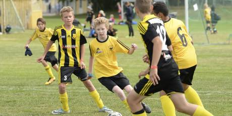

SPORT
Stortävlingen Västerås Open skjuts upp till 2021
Sport Västerås Golfklubb: ”Tråkigt men väntat besked” Regerande mästarinnan Annelie Sjöholm får vänta ett år på att försvara sin titel i Anna Nordqvist Västerås Open. Nu har beskedet kommit att stortävlingen skjuts ett år på framtiden på grund av det...onsdag 17/6 15:43
Kommentera
Askebrand hyllar fansen inför premiären: "Det är magiskt"
Sport Tränaren inför kvällens premiär: "Bara att släppa loss gubbarna" Det är bara timmar kvar till VSK fotbolls minst sagt efterlängtade premiär i Superettan. Och det är ett laddat gäng grönvita spelare som står redo för att ge grannarna från Eskilstuna en rejäl fajt....tisdag 16/6 16:34

Hela listan: Här är klubbarna som får coronastöd
Sport Över 8 miljoner kronor till Västerås idrottsföreningar Under måndagen började det så kallade kompensationsstödet till idrottsföreningar som har drabbats ekonomiskt av coronapandemin att betalas ut. Västmanland tar del av fem procent, totalt 9 293 000...tisdag 16/6 8:50
SENASTE SPORTNYHETERNA
- 15:43Stortävlingen Västerås Open skjuts upp till 2021
- 16:34Askebrand hyllar fansen inför premiären: "Det är magiskt"
- 08:50Hela listan: Här är klubbarna som får coronastöd
- 12:17”Vi vill att sporten ska leva vidare”
- 10:31Västerås får EM i styrkelyft 2021
- 14:34Västeråsare ingår i ny OS-satsning med skidskyttelegendar i spetsen
- 08:21Klart: Nu kan idrotten starta igen
- 13:39Beslut idag: Aroscupen ställs in
SENASTE UNG IDROTT
- 13:39Beslut idag: Aroscupen ställs in
- 15:29Krisande idrottsföreningar får stöd av kommunen
- 14:00Fortsatta Västeråsframgångar när USM i friidrott avgjordes
- 12:17Basketglädje och inspiration i massor
- 09:38Pollux-skrinnarna på internationellt uppdrag
- 09:19Västerås Friidrott – en klubb av stor vikt på JSM
- 14:22Full utdelning i spåren för Pontus från Västerås
- 14:30Internationell framgång för Västeråsboxaren
”Vi vill att sporten ska leva vidare”
Sport Livestreamad MMA-gala från Västerås Arena Det kommer att hållas en Fight Club Rush 7 trots rådande restriktioner. Men MMA-galan den 4 juli i Västerås Arena blir annorlunda. Livesänd – utan publik på plats. – Vi vill att sporten ska leva...lördag 13/6 12:17
Västerås får EM i styrkelyft 2021
Sport Europas starkaste kommer till stan: ”Känns fantastiskt” Vilket styrkebesked, Västerås. Nu står det klart att Europamästerskapet i styrkelyft kommer att arrangeras i Västerås på den nya innebandyarenan på Rocklunda 3–12 december 2021. Omkring 700–800...torsdag 11/6 10:31
Västeråsare ingår i ny OS-satsning med skidskyttelegendar i spetsen
Sport 20-årige skridskoåkaren Oskar Nilsson: ”En jättemöjlighet” Sveriges olympiska kommitté gör en offensiv satsning mot vinterspelen 2026. Med i den satsningen finns 20-årige västeråsaren Oskar Nilsson – under ledning av en stark ledarstab ledd av...lördag 30/5 14:34
Klart: Nu kan idrotten starta igen
Hälsa Webb-tv: Pressträff med Regeringen och Folkhälsomyndigheten om idrotten Vid en pressträff under fredagsmorgonen gav regeringen och Folkhälsomyndigheten grönt ljus till idrotten att starta igen – dock utan publik. Beslutet gäller från den 14 juni.fredag 29/5 8:21
Beslut idag: Aroscupen ställs in
Ung idrott Coronaviruset sätter stopp för cupen som arrangerats årligen sedan 1978 Aroscupen har arrangerats varje år sedan starten 1978. Men med anledning av coronapandemin tvingas arrangörsföreningen Skiljebo SK i år att ställa in sin populära cup. – Det är med stor sorg vi kan...måndag 18/5 13:39
VSK-tränaren blir förbundskapten
Sport Tar över damlandslaget i bandy: "En ära att ens få frågan" Under onsdagen blev det klart att Olle Wiberg tar över förbundskaptensrollen för det svenska damlandslaget i bandy. – Det är en ära att ens få frågan, det hade jag verkligen inte räknat med. Drömmen...onsdag 13/5 15:10
Lagkapten Persson stannar i VSK
Sport ”Det finns fortfarande saker att utveckla i laget” Hon tog sitt andra raka SM-guld med VSK i våras. Nu står det klart att lagkaptenen Malin Persson stannar i sportklubben – minst en säsong till. – Det känns som att vi har en rolig resa som jag vill...tisdag 28/4 12:49
Krisande idrottsföreningar får stöd av kommunen
Ung idrott Vicki Skure-Eriksson (C): "Otroligt viktig betydelse för Västerås" Nämnden för Idrott, Fritid och Förebyggande beslutade under tisdagen om lättnader för de idrottsföreningar med barn- och ungdomsverksamhet som har det svårt till följd av Coronapandemin.onsdag 22/4 15:29
Fullerö GK vill vara mer än en golfklubb
Sport ”En mötesplats för alla i närområdet” Fullerö GK laddar för en ny säsong – med mer än bara golf. – Vi vill vara en mötesplats för alla i närområdet här ute, säger Åke Westman, ordförande för marknadskommitén i Fullerö GK. Bland annat har...söndag 29/3 17:27
Krattat för en kanonsäsong på Frösåker – Årets golfklubb i Sverige
Sport Klubbchefen och ägaren: ”Oerhört stolta” Nytt hotell, världsunika bunkrar, uppfräschad bana – och rekordtidig öppning på säsongen. Nyheterna är många i år hos storsatsande Frösåker Golf & Country Club. Men så har också anläggningen utsetts...söndag 29/3 8:24
Västeråsgolfaren växlar upp i år – Europatouren för Sjöholm
Sport ”Blir en spännande säsong” Västerås främsta golfproffs på damsidan tar ännu ett kliv uppåt i år. Till den främsta Europaeliten. – Kul att få spela på en högre tour och mot bättre spelare, säger Västerås GK:s Annelie ”Annie”...lördag 28/3 17:06
Klubbchefen inför treårsjubileet: ”Västerås Open ger en speciell gemenskap”
Sport Västerås GK börjar få bra rutin på att arrangera Europatävlingen Den 6–8 augusti är det dags igen för Anna Nordqvist Västerås Open. Arrangörsklubben Västerås GK börjar få god vana av jättearrangemanget efter två tidigare upplagor. – Vi kör på autopilot nu, med...lördag 28/3 8:30
Västeråsgolfaren klar för världstour
Sport Björn Hellgren, 29, efter sitt succékval: ”Det blir häftigt” Frösåkerproffset Björn Hellgren har nått sin hittills största framgång på golfbanan. Ny arbetsplats detta år blir Asien och världens tredje största tour. – Det blir häftigt, säger den 29-årige...fredag 27/3 20:09
Glädjebeskedet: Redan på fredag börjar golfsäsongen på Frösåker
Sport Utsedd till Årets golfklubb i Sverige: ”Oerhört stolta” Frösåker Golf & Country Club har utsetts till Årets golfklubb 2020. – Det är stort och vi är oerhört stolta över det, säger ägaren Christer Ral och klubbchefen Stefan Hult. Det ”firas” med en...torsdag 26/3 11:40
Klart – Harnesk fortsätter i Rönnby
Sport Nu är det klart – Rönnby får behålla tränaren Andreas Harnesk under de kommande tre säsongerna. – Det här är ett avstamp i vårt mål att på nytt bli ledande inom svensk innebandy, säger Lena Andgrim...onsdag 25/3 13:40
Västeråsare utsedd till Årets stjärnskott i Basketligan
Sport Förbundet: "En framtida landslagsspelare" Västeråsfostrade Matilda Ekh har gjort braksuccé i den svenska Basketligan. Efter det stora genombrottet har hon nu blivit utsedd till Årets stjärnskott i ligan. – Hennes framfart är bländande och...måndag 23/3 15:26
Guldtränaren: "En osannolik avslutning”
Sport Olle Wiberg hyllar VSK-fansen efter SM-triumfen: ”Fantastiska” Det blev en festlig och guldskimrande lördagskväll och natt i Västerås. I dag vaknade VSK:s guldhjältar upp som svenska mästare efter ett sanslöst drama. – Vi fick en utdelning som man aldrig trodde...söndag 22/3 15:37
VSK mästare igen efter galen vändning
Västerås Vände 2–3 till 4–3 på tilläggstid: ”Helt sjukt” Bäst i Sverige – igen. Efter en fullständigt osannolik vändning i slutminuterna. VSK försvarade på lördagen sitt SM-guld och tog andra raka titeln efter en galen rysare med Charlotte Selbekk i...lördag 21/3 12:50
Innebandyfesten inställd: ”En stor tomhet”
Sport Ungdomsturneringen Mälarenergi Cup tvingas ställa in Här kommer ännu ett hårt slag för Västerås föreningsliv. Den stora innebandyfesten Mälarenergi cup i Västerås ställs in. – Det är bara en stor tomhet just nu, säger Peter Hofer, ordförande i...onsdag 18/3 20:10
VSK har stort stöd i SM-finalen – på distans
Sport Över 1 000 åskådare via swishkampanj: ”Känns bra” På lördag ska VSK försöka försvara sitt historiska SM-guld i bandy. När de glider in på Studenternas IP sker det inför coronatomma läktare. Men med västeråsarnas stora stöd i ryggen. – Det känns bra....tisdag 17/3 15:58
KLART: VSK till andra raka SM-finalen
Sport Mästarna vann över AIK med 2–0 i matcher efter stark andra halvlek Tomma läktare hemma i ABB Arena. Men full fart mot Studenternas. VSK är klart för sin andra raka SM-final i bandy efter 2–0 i matcher i semifinalserien mot AIK.fredag 13/3 20:54
Fortsatta Västeråsframgångar när USM i friidrott avgjordes
Ung idrott Sex SM-medaljer till friidrottsklubben: ”Bra utdelning” Tredje SM-helgen på raken för Västerås Friidrott. Nu med de yngsta, 15–16-åringarna, på USM i Örebro. Medaljsviten hölls intakt, med bred marginal. Truppen på totalt tolv tjejer och killar fick en...tisdag 10/3 14:00
Basketglädje och inspiration i massor
Ung idrott Aros Basket höll uppskattat Girls Camp I helgen anordnade Aros Basket Girls Camp för bara tjejer. Tidigare landslagsspelaren Josefin Olheim var specialinbjuden som lägerledare och intresset hos västeråsarna var stort.måndag 9/3 12:17
Trots segern – VSK Fotboll ute ur Svenska Cupen
Sport Thomas Askebrand: "Andra halvlek är jag fullt nöjd med" I den sista omgången av gruppspelet i Svenska Cupen var VSK Fotboll ett par nummer större än gästande division 1-laget Sollentuna. Grönvitt kunde vinna med komfortabla 4–0, trots segern tog VSK sig...lördag 7/3 16:43
Pollux-skrinnarna på internationellt uppdrag
Ung idrott Felicia och Amelia deltog i Vikingrace i Heerenveen Västeråsklubben SK Pollux har varit representerad med två åkare på Vikingrace i nederländska Heerenveen. Med goda resultat.fredag 6/3 9:38
Västerås Friidrott – en klubb av stor vikt på JSM
Ung idrott Två guld och totalt fyra medaljer Det var tyngd i de fyra medaljerna Västerås Friidrott lyckades få med sig hem från junior-SM inomhus i Göteborg. Två guld och ett silver i viktkastning.torsdag 5/3 9:19
Säsongen är över för VSK Bandy
Sport Michael Carlsson: "Vi fick kämpa i motvind" VSK Bandy är utslagna ur slutspelet efter att Bollnäs vunnit den femte och avgörande kvartsfinalen med 5–3. – Det var en tung femte och avgörande match, säger VSK:s tränare Michael Carlsson.tisdag 3/3 21:52
Satsning på en mer jämställd domarkår i Västmanland
Sport ”Ska vara självklart både för tjejer och killar att döma” Fler killar än tjejer väljer att bli domare i Fotbollssverige. Västmanland är inget undantag. Nu inleds en satsning för att ändra på den saken.tisdag 3/3 10:13
Mäktig säsong av VI – klara för allsvenskan
Sport Daniel Cederroos: "Vi var klassen större än dem" VI:s herrar är tillbaka i allsvenskan i handboll. Det står klart efter dagens seger med 33-22 över HK Eskil. I och med segern är man klara seriesegrare med två omgångar kvar att spela.lördag 29/2 17:05
VSK reste sig på nio – SM-kvartsfinalen lever vidare
Sport ”Vi klev verkligen in i slutspelet idag” Med kniven mot strupen gick det vägen. VSK gjorde vad som krävdes för att hålla liv i SM-kvartsfinalserien mot Bollnäs på torsdagskvällen. 8–5 hemma i ABB Arena och reducerat till 1–2 i matchserien.fredag 28/2 7:00
Om kommentarer på denna sajt
Hej! Vad tycker du om det du just läst? Bidra gärna med tankar och synpunkter men tänk på att det bästa sättet att hitta läsare är att hålla sig kort och koncis, med en god ton. Glöm inte att dela alla artiklar du kommenterat – för ännu mer debatt! Här kan du läsa mer om vilka regler som gäller i våra kommentarsfält.
Comments powered by Disqus.